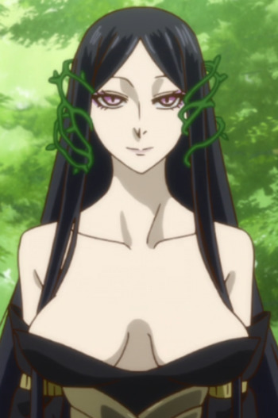

|
Diantha |
|
Diantha is famous and renowned actress in the Kalos region. She is the Champion as well. She can mega - evolve with her Gardevoir. |
 |
Erza Scarlet |
- Fairy Tail
- Fairy Tail OVA
- Fairy Tail x Rave Master
- Fairy Tail the Movie: Phoenix Priestess
- Fairy Tail (2014)
- Fairy Tail OVA (2016)
- Fairy Tail Movie 2: Dragon Cry
|
Erza Scarlet is a S-class mage of the Fairy Tail. Her magic ability is Requip. Erza is a very person and often criticize the bad behavior and habits of her guildmates. She cause fear and knocks out anyone who does not answer to her questions. Erza has a great sense of justice. She is very loyal and dedicated to Makarov and the guild. |
 |
Futaha Miyamizu |
|
Futaha Miyamizu is the mother of Mitsuha and Yotsuha Miyamizu. |
 |
Hermione de Borromeo |
|
Hermione de Borromeo is Romeo's Fiancee. Hermione gets along quite well with both Romeo and his friend Mercutio. She is very sweet and innocent, but obsessed with Romeo and tried to keep Juliet as far away from him as she could. |
 |
Irisviel von Einzbern |
- Fate/Zero
- Fate/Zero Season 2
- Fate/Zero Remix
- Fate/Zero: Please! Einzbern Counseling Room
- Fate/kaleid liner Primsa Illya
- Fate/kaleid liner Prisma Illya Specials
- Fate/kaleid liner Prisma Illya 2wei!
- Fate/kaleid liner Prisma Illya 2wei Herz!
|
Irisveil von Einzbern is the partner of Saber. She is the mother of Illyasviel and wife of Kiritsugu Emiya. She is a homunculus that has limited understand of human emotion. She has upbeat and colorful personality. |
 |
Leonora Nakiri |
- Food Wars! The Second Plate
|
Leonora Nakiri is the Research Division Head of Nakiri International and Alice Nakiri's mother. |
|  |
Titania |
|
Titania is the queen of the fairies and wife to Oberon. She is acquaintance with Elias Ainsworth. Titania is free-spirited and patience. |